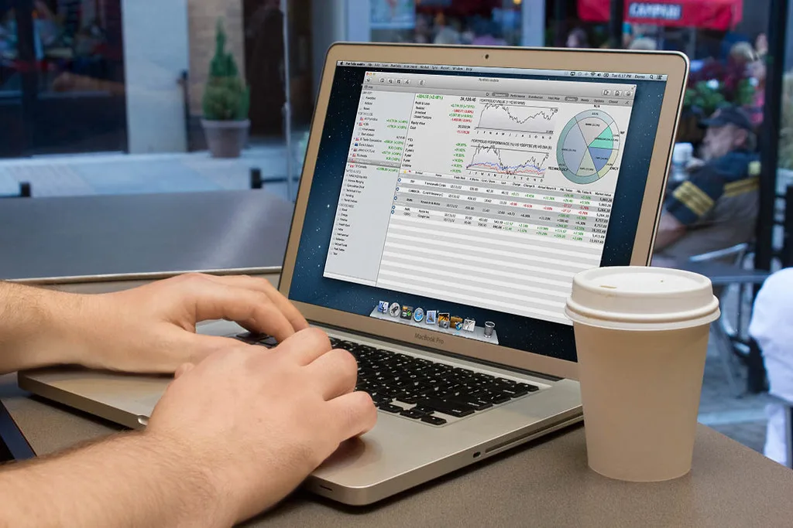

인공지능(AI) 기업 앤트로픽이 미국 나스닥 상장 첫날 공모가보다 약 17% 오른 가격에 거래를 마쳤다. 앤트로픽은 19일(현지시간) 'ANT'라는 종목 코드로 첫 거래를 시작해 주당 97.17달러에 장을 마감했다. 공모가 83달러와 비교하면 17.07% 높은 수준이다. 역대 최대 규모의 기업공개(IPO)로 관심을 모은 만큼 첫날 성적표는 시장의 주목을 받았다.
거래는 순탄하지 않았다. 앤트로픽 주식은 현지시간 오전 11시 48분께 시초가 111.50달러로 거래를 시작했고, 장중 한때 115.10달러까지 치솟았다. 이때 공모가 대비 상승률은 38%를 넘어섰다. 그러나 이후 매물이 쏟아지며 하락세로 돌아섰고, 한때 92달러 선까지 밀리기도 했다. 결과적으로 종가는 시초가보다 13%가량 낮은 수준에서 결정됐다. 상장 직후 매수세가 몰렸다가 차익을 노린 매도가 이어지는, 대형 공모주에서 흔히 나타나는 흐름이 그대로 재현됐다는 평가가 나온다. 하루 사이 고점과 저점의 차이가 20달러를 넘을 만큼 변동 폭이 컸던 것도 특징이다.

첫날 거래량은 약 8억5천만 주에 달한 것으로 집계됐다. 종가 기준 시가총액은 1조2천억 달러대 후반으로, 매체에 따라 약 1조2716억 달러 또는 1조2800억 달러로 보도됐다. 상장 첫날부터 시가총액 1조 달러를 넘는 초대형 기업이 탄생한 셈이다. 앤트로픽은 이번 공모로 약 813억 달러를 조달했는데, 공모 청약에 투자자 주문이 대거 몰리면서 공모가를 희망 범위 상단보다 높게 정한 바 있다.
이날 미국 증시 전반의 분위기는 좋지 않았다. 다우존스30 산업평균지수와 S&P500, 나스닥 종합지수가 모두 2% 안팎 하락 마감했다. 시장에서는 지수 약세 속에서도 공모가를 웃도는 수준을 지켜낸 점을 긍정적으로 보는 시각과, 장중 고점 대비 상승폭을 상당 부분 반납한 점을 들어 차익 실현 압력이 크다는 분석이 함께 나왔다. 금리와 통화정책을 둘러싼 불확실성이 기술주 전반의 투자 심리를 짓누르고 있다는 점도 부담 요인으로 꼽혔다.
앤트로픽은 대화형 AI 모델 '클로드'를 개발한 회사로, 기업 고객을 중심으로 AI 모델과 코딩 도구 수요가 늘며 빠르게 성장했다. 이번 상장은 생성형 AI 전문 기업의 첫 대형 IPO 사례로 꼽힌다. 그만큼 이번 상장은 AI 산업이 막대한 투자 비용을 감당할 만큼 수익을 낼 수 있는지 시장이 평가하는 시험대로 받아들여졌다. 상장으로 확보한 자금은 연산 인프라 확충과 연구 개발에 주로 쓰일 것으로 예상된다.
국내 증시도 앤트로픽 상장의 영향을 받았다. 19일 코스피는 장중 5000선 아래로 내려갔다가 반등해 전 거래일보다 1.39% 오른 5137.89에 마감했는데, 시장에서는 앤트로픽 상장을 앞둔 기대감이 반등 요인 가운데 하나로 거론됐다. 앞으로는 미국 증시 약세가 국내 AI·반도체 관련 종목에 어떤 영향을 미칠지가 관심사다.
전문가들은 대형 공모주의 경우 상장 초기 주가 변동성이 큰 만큼 첫날 결과만으로 방향을 단정하기는 이르다고 입을 모은다. 상장 기업이 된 앤트로픽은 앞으로 분기마다 실적을 공개해야 한다. 매출 성장 속도와 수익성 개선 여부, 데이터센터 등 인프라 투자 부담이 향후 주가를 좌우할 핵심 변수로 꼽힌다.